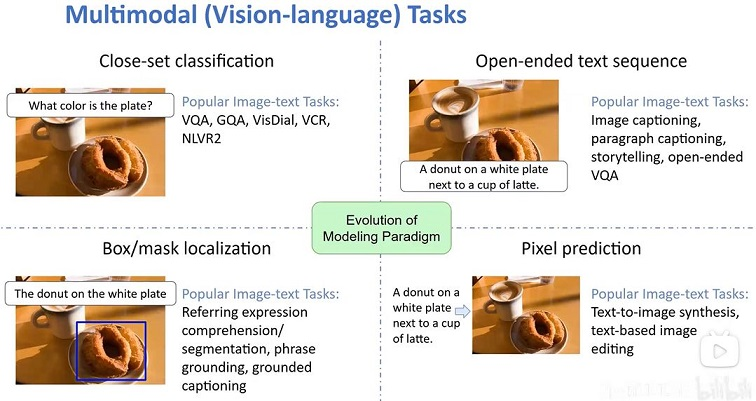

目录 #
论文 #
-
开源地址 Repo git
Survey #
类型 I：无长期记忆的闭源 LLMs 作为规划器。 #
Visual ChatGPT ***
MM-REACT ***
HuggingGPT ***
Chameleon ***
类型 II：无长期记忆的微调 LLMs 作为规划器。 #
类型 IV：具有本地长期记忆的规划器。 #
多模态 Agent[1] #
-
核心组件
- 感知组件关注处理多模态信息
- 规划器负责推理和制定计划
- 行动组件执行计划
- 记忆组件则涉及长期和短期记忆
-
四种类型
- 无长期记忆的闭源 LLMs 作为规划器
- 无长期记忆的微调 LLMs 作为规划器
- 具有间接长期记忆的规划器
- 具有本地长期记忆的规划器
-
多智能体协作
- 讨论了 LMAs 如何通过协作框架共同实现共同目标。
多模态 Agent[10] #
范式 #
{% asset_img ’’ %}

-
MM-ReAct
-
HuggingGPT[21, 22]
-
Chameleon
-
Visual ChatGPT [20]
works #
{% asset_img ’’ %}

参考 #
综述 #
1xx. 智体AI在多模态交互领域的综述（上） 1xx. 智体AI在多模态交互领域的综述（下）
xxx #
多模态Agent #
1xx. {% post_link ‘gptMultimodal’ %} self 1xx. {% post_link ‘gptMultimodalSurvey’ %} self
xxx #
-
《Visual ChatGPT: Talking, Drawing and Editing with Visual Foundation Models》 Visual ChatGPT git
-
HuggingGPT git hugginggpt in langchain git langchain-huggingGPT git
1xx. Visual Programming——实现通用人工智能的另一种方式 2022 best paper